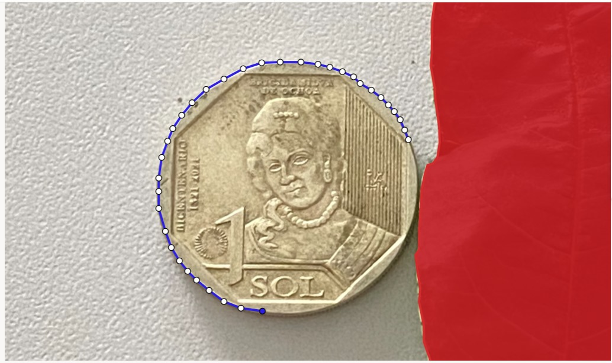
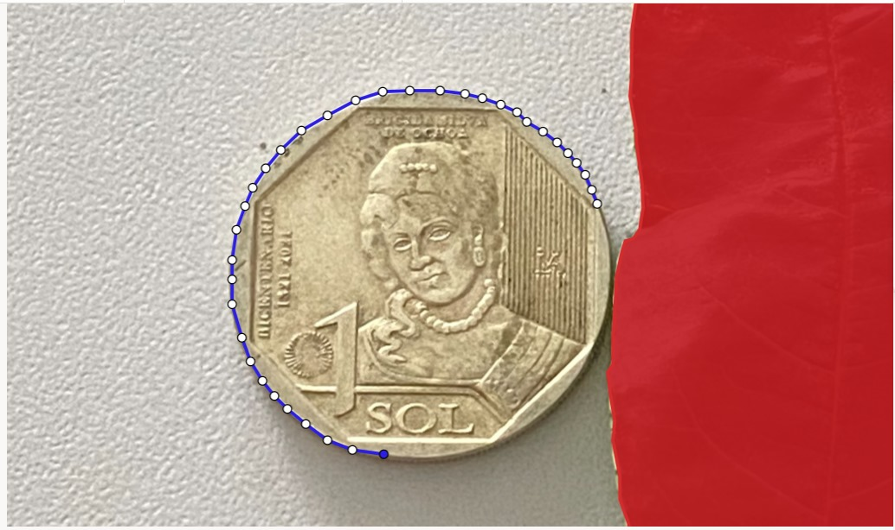

Biometría en hojas de durazno
INTRODUCCIÓN
La biometría vegetal es una herramienta fundamental para entender las características morfológicas de las plantas y su relación con el entorno. En el caso del durazno (Prunus persica), el análisis de las hojas puede proporcionar información valiosa sobre su crecimiento, salud y adaptación. Tecnologías como Anaconda, un entorno de programación de código abierto, y Label Studio, una plataforma de anotación de datos, permiten automatizar y mejorar la precisión del análisis biométrico
OBJETIVOS
##Objetivo general:
Conocer el funcionamiento de las plataformas de miniconda y Label studio usando hojas de durazno.
##Objetivos específicos:
Explorar las funcionalidades de la plataforma Miniconda para la gestión de entornos de programación.
Desarrollar habilidades en el uso de Label Studio para la anotación de imágenes de hojas de durazno.
METODOLOGÍA
Recolección de hojas de durazno
Se seleccionaron hojas de durazno del área experimental agroforestal Chachapoyas, pertenenciente al INDES-CES.
Tomar fotos a las hojas en conjunto con monedas
Se tomaron imágenes de alta resolución de las hojas en un fondo uniforme.
Las imágenes se etiquetaron con códigos únicos para su trazabilidad.
Descarga e instalación de Miniconda

Encontramos los códigos para trabajar en base a código abierto en label studio

Entrar a la platraforma de miniconda de código abierto.
En este paso se colocarán los códigos de “pip install” para vincular miniconda con label studio y nos pueda facilitar un sitio web dónde se pueda trabajar de manera remota, luego se abre con “label-studio”, para abrir el programa y puedas usar las veces que sean necesarias.

Ejecución delos códigos:
Luego se realiza la ejecución dónde saldrá la plataforma de label studio, de manera que se crea una cuenta.

Se crea un nuevo proyecto.
Acá en dónde se podrá subir las imágenes tomadas anteriormente, considerar los formatos establecidos, como por ejemplo el JPG

Elegir la segmentación de polígonos
Con esta segmentación nos permitirá designar como trabajar con las figuras, ya que en este caso se identificarán la moneda y la hoja, así como el color con el que cada uno será trabajado, en este caso rojo y azul.


Realizamos trazo de la hoja y moneda respectivamente.

 

RESULTADOS
Se realizó cada el trazo de cada una de las imágenes.

Se tiene en cuenta esto para determinar el área foliar de acuerdo a las dimensiones promedio, distribución del área, dínde sepuede determinar el área promedio de las hojas y se adecuará de acuerdo al estudio que se quiera realizar.
CONCLUSIONES
El uso combinado de Anaconda y Label Studio permitió un análisis biométrico eficiente y preciso de las hojas de durazno. Las herramientas automatizadas facilitaron la recolección y procesamiento de datos, mejorando la replicabilidad del estudio. Este enfoque también destacó la importancia de factores ambientales en el desarrollo morfológico de las hojas. Los resultados sientan las bases para estudios más avanzados sobre el impacto de las condiciones agronómicas en el cultivo de durazno.
REFERENCIAS:
Rosebrock, A. (2020). Practical Python and OpenCV: An Introductory, Example-Driven Guide to Image Processing and Computer Vision. PyImageSearch.
Label Studio Documentation. (2024). Label Studio Open Source Data Labeling Tool. Retrieved from https://labelstud.io